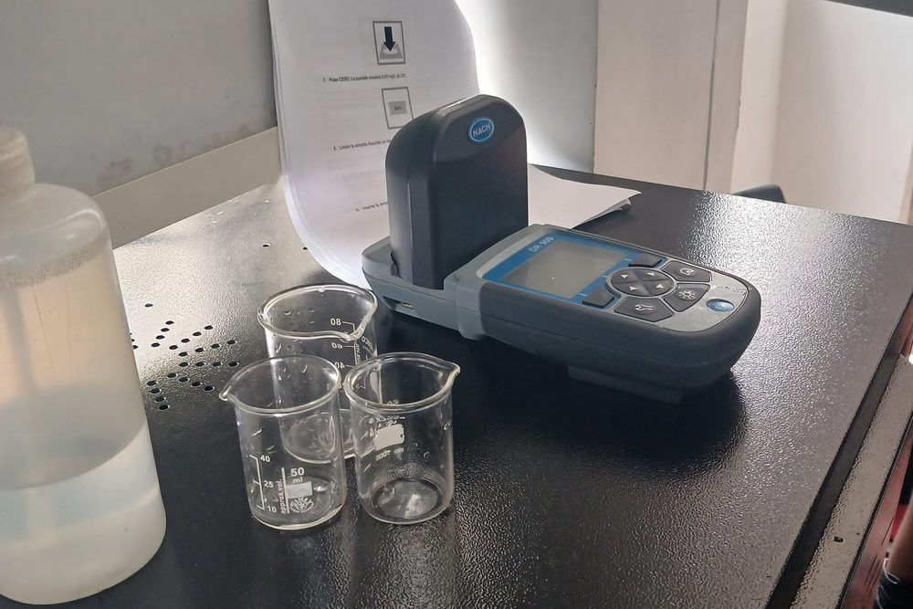
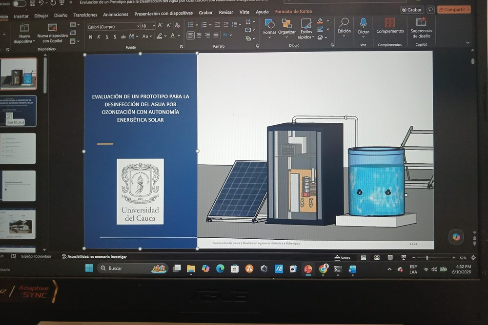
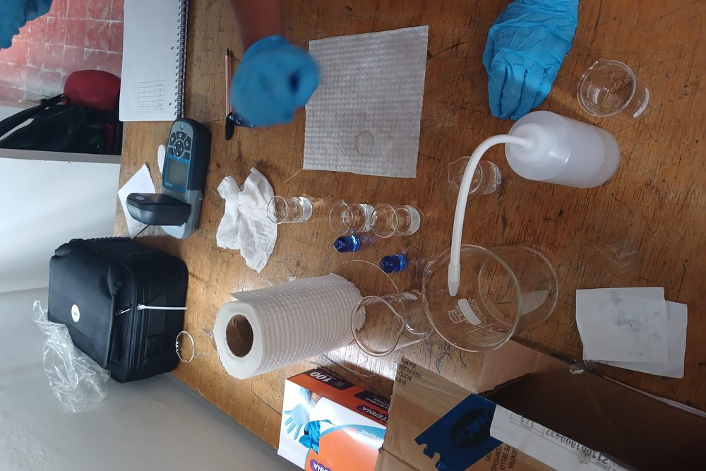
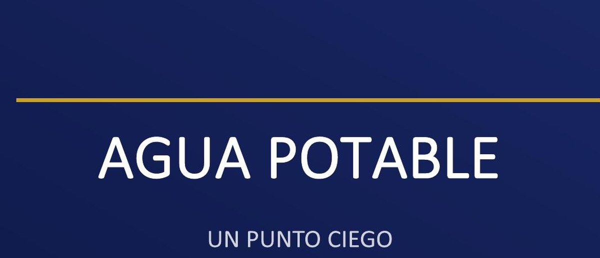

Calidad del agua
Caracterización fisicoquímica, monitoreo de cuerpos de agua y análisis de la variabilidad espacial y temporal de los indicadores. Interesa entender qué controla la calidad, no solo reportarla.
Investigación
Medir con criterio, modelar con supuestos explícitos y dejar resultados que otros puedan reproducir.
Líneas
Son líneas de trabajo abiertas, no compartimentos. Un estudio de calidad del agua suele terminar en un modelo, y un modelo suele exigir una campaña de medición.

Caracterización fisicoquímica, monitoreo de cuerpos de agua y análisis de la variabilidad espacial y temporal de los indicadores. Interesa entender qué controla la calidad, no solo reportarla.

Modelación numérica, automatización de escenarios y procesamiento de resultados. El foco está en flujos de trabajo reproducibles que conecten simulación, datos y decisiones de ingeniería.

Redes de distribución, flujo en lámina libre y procesos morfodinámicos. Herramientas como EPANET, iRIC y DualSPHysics permiten explorar escenarios que en laboratorio serían costosos.

Diseño de prácticas, instrumentación y tratamiento de datos experimentales. La pregunta guía es cómo enseñar y medir mejor con los recursos disponibles.
Grupo
Participo en el Grupo de Investigación en Hidráulica e Hidrología de la Universidad del Cauca, un espacio que articula modelación hidráulica, estudios de calidad del agua y formación de estudiantes de pregrado y posgrado.
El grupo aporta el contexto institucional y el trabajo colectivo; mi aporte se concentra en la intersección entre experimentación, simulación y herramientas computacionales.
Proyectos

Calidad del agua
Una revisión sistemática sobre los límites de la cloración como única barrera: Cryptosporidium, Giardia, la forma cocoidal de H. pylori y los subproductos de desinfección.
El trabajo conecta la evidencia con decisiones de tratamiento en PTAP y SAAR, y propone un esquema de barreras múltiples en lugar de depender de un solo desinfectante.
Calidad del agua, modelación hidráulica o desarrollo de herramientas para laboratorio.
Hablemos